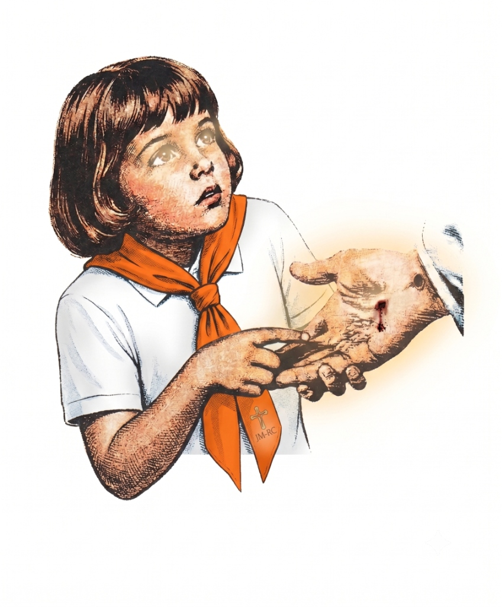

«Sejas o que fores,
sê todo de Deus.»

Você sente que a sua juventude tem um propósito?
Venha viver uma experiência inesquecível de fé, serviço e verdadeira fraternidade. Em cada visita e em cada oração, você será a resposta de Deus para muitas famílias.
Quer fazer parte da Missão em SJC-SP?
Preencha nossa lista de interesse em 1 minuto! O seu pré-cadastro ajuda nossa equipe a dimensionar a estrutura da missão, organizar as vagas e enviar o Guia do Missionário diretamente no seu contato.
Dúvidas Frequentes
A Missão acontecerá em bairros da Zona Norte de São José dos Campos - SP, durante o feriado de Nossa Senhora Aparecida (10 a 12 de outubro de 2026). Todos os detalhes sobre valores, paróquia-base, ruas e locais atendidos, hospedagem e transporte serão informados antecipadamente no grupo do WhatsApp e, posteriormente, no Instagram.
Todos os jovens que desejam vivenciar o amor de Cristo, servir às famílias e viver dias inesquecíveis de fé e fraternidade! Não é necessária experiência prévia.
No grupo você recebe em primeira mão os valores da taxa de inscrição, fichas de cadastro, orientações do que levar, programação detalhada em São José dos Campos e conversa diretamente com a coordenação.
Sim. A Missão não é um evento gratuito. Existe uma taxa de contribuição destinada a cobrir a alimentação completa durante os 3 dias, hospedagem e logística. O uniforme (camisa oficial e o lenço como símbolo de identificação) é adquirido com valor à parte. Todos os valores e opções de pagamento são compartilhados com transparência no Grupo Oficial do WhatsApp.
Sim, mediante autorização oficial. O menor de idade que não apresentar o documento oficial de autorização assinado pelos pais ou responsável legal, ou que estiver desacompanhado quando exigido, NÃO poderá participar das atividades missionárias. O modelo desse documento, as orientações de preenchimento e as regras completas sobre a participação de menores serão disponibilizados em breve no Grupo Oficial do WhatsApp junto com as inscrições definitivas.
A hospedagem dos missionários será em instalações da paróquia ou em casas de famílias paroquianas acolhedoras. Como é uma vivência fraterna e missionária, cada participante deve levar: colchonete, isolante térmico ou colchão inflável, travesseiro, lençol/cobertor e itens de higiene pessoal. O checklist completo e as orientações finais serão enviados com antecedência no Grupo Oficial do WhatsApp.
Ainda ficou com alguma dúvida?
Converse diretamente com a equipe de coordenação pelo WhatsApp.
O que é o Regnum Christi e a Juventude Missionária?
O Regnum Christi é uma federação de fiéis leigos, sacerdotes Legionários de Cristo e consagrados(as), aprovada pela Santa Sé, que busca fazer presente o Reino de Cristo no coração das pessoas e na sociedade, em filial comunhão e obediência ao Papa e ao Magistério da Igreja Católica.
O que fazemos na Juventude Missionária (JFM)?
Criada em 1986 como o apostolado jovem internacional, a Juventude Missionária mobiliza milhares de jovens para vivenciar o Evangelho na prática:
- Visitas de Porta em Porta: Entrar nos lares para escutar as famílias, rezar junto com elas e levar uma mensagem de fé e bênção.
- Ações Paroquiais & Litúrgicas: Auxílio aos párocos locais, Adoração ao Santíssimo Sacramento, Rosário nas praças e momentos de oração comunitária.
- Atividades e Evangelização Infantil: Momentos lúdicos, catequese e gincanas para as crianças e adolescentes do bairro.
- Fraternidade & Vida de Oração: Experiência comunitária de profunda amizade cristã, Santa Missa, oração diária e crescimento humano.
Apostolados que Transformam a Sociedade
O Regnum Christi possui dezenas de apostolados pelo mundo. No Vale do Paraíba, destacam-se iniciativas de impacto social, formativo e evangelizador:
A Dinâmica dos 3 Dias de Missão
Um feriado inesquecível de oração, ação e verdadeira amizade. Veja a jornada planejada para cada dia:
Acolhida & Missa de Envio
- Chegada dos jovens em SJC e acomodação
- Formação prática e dinâmicas de entrosamento
- Santa Missa de Envio e primeiras visitas
Dia Missionário & Vigília
- Visitas de porta em porta e oração nos lares
- Gincanas e evangelização com as crianças
- Adoração ao Santíssimo e Noite Fraterna
Festa de N. Sra. & Retorno
- Missa Solene com a comunidade paroquial
- Partilha de testemunhos e almoço festivo
- Confraternização e retorno para casa renovados
«Christus vivit. Christus vocat. Christus mittit.»
Missão Nossa Senhora Aparecida
10 a 12 de Outubro de 2026 (No Feriado de Nossa Senhora Aparecida)
Como Vivemos a Nossa Missão
Pilares fundamentais da identidade do missionário do Regnum Christi.
Espiritualidade Cristocêntrica
Oração diária, vida sacramental e intimidade pessoal com Jesus Cristo ressuscitado.
Urgência Apostólica
Sair sem demora ao encontro de famílias, enfermos e comunidades para levar a boa nova.
Fraternidade Autêntica
Amizades sólidas e apoio mútuo entre jovens que partilham do mesmo ideal de fé.
Formação de Liderança
Preparação doutrinal e humana para ser apóstolo e transformar a sociedade.
«Vós sois a luz do mundo. Não se pode esconder uma cidade situada sobre um monte.»
São Mateus 5, 14«Ide por todo o mundo e pregai o Evangelho a toda criatura.»
São Marcos 16, 15«O amor de Cristo nos impele.»
II Coríntios 5, 14@jm.valedoparaiba
Juventude Missionária • Vale do Paraíba
Acompanhe fotos, bastidores, memórias das missões e os avisos oficiais da Missão Nossa Senhora Aparecida em SJC direto no nosso feed.
Vem ser resposta de amor para o mundo.
Garanta sua vaga na Missão Nossa Senhora Aparecida em São José dos Campos (SJC) de 10 a 12 de Outubro de 2026. Te esperamos!
Entrar no Grupo Oficial de Informações